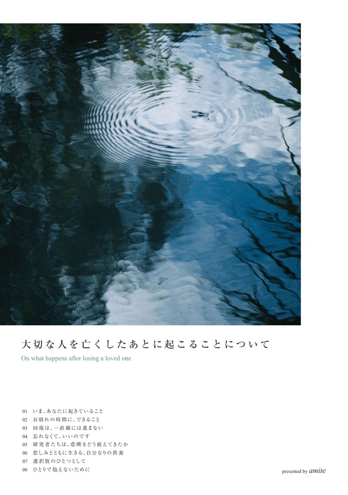

Always, and ever after, by your side.
いつでも、これからも、
そばに。

悲しみは、断ち切るものではなく、
結び直すもの。
見送ったあとも、その人との関係は終わりません。
かたちや場所を変えて、続いていきます。
「毎朝手を合わせ、語りかける。」かつて仏壇・法要の文化が担っていたその時間が、少し形を変えて継続しつづける。
amiteは、ご遺骨からつくったダイヤモンドを、ひとつのペンダントに仕立てます。その人との思いを、いつも身につけていられるかたちで。永遠と。
凪いだ水面のように、静かな日もあれば、
寄せては返す波に、揺れる日もある。
これからどんな時をくぐり抜けても、
いつも、すぐそばに。
ときに、背中をそっと支えるように、
ときに、胸の奥に灯をともすように、
ときに、風のごとく、ただあなたを包むように。
Collection
鳥、花、星。装飾を足さず、石と地金だけで成り立つ三つのかたち。
旅立った方が、鳥のようにどこまでも自由に、穏やかに羽ばたいていけますように。
平和と希望の象徴であるオリーブを添えて。その旅立ちを見送るように、胸もとに。
マリーゴールドは、亡き人を迎える花として知られています。遠い国では、帰ってくる魂の道しるべとして、この花が飾られます。
離れていても、帰る場所がここにあるように。大切な方と過ごしたあたたかな時間を、ひらく花のかたちに込めました。
「亡くなった人は星になる」と、子どものころに聞いたことはありませんか。
夜空でいちばん近くにひかる星のように、見上げるたびに思い出せる、小さなひかり。その想いは、心のなかでも消えることなくひかり続けます。
言葉を、内側に。
お申し込みのあと、いくつかの問いを書いていただくシートをお渡しします。書いていただいた言葉は、こちらで清書して品物とともにお届けします。
そのなかから選んだ言葉を、ご希望に応じてペンダントの内側に刻みます。身につけていても、ほかの人からは見えない位置に。ご本人だけが知っている言葉として。
製作には、素材のお預かりからおよそ5か月かかります。急がずに、言葉を決めていただくための時間です。
- i.いちばんその人らしかった場面は、
どんな場面でしたか。 - ii.その方から受け取って、
いまも使っているものはありますか。 - iii.ひとこと渡せるとしたら、
何と言いますか。
Process
ご相談から、お手元に届くまで。およそ5か月をかけて、ひとつずつお仕立てします。
お問い合わせフォーム、お電話、または葬儀社さまを通じてご連絡ください。オンラインでお話しすることも可能です。
鳥・花・星のかたちと、石のサイズをお選びいただき、お申し込みとなります。
約2〜3グラムをお預かりします。すべてをお預かりするものではありません。お預かりの方法は、ご相談時にご案内します。
いくつかの問いを書いていただくシートをお渡しします。製作のあいだに、内側に刻む言葉を急がずに選んでいただけます。
ご遺骨や毛髪から取り出した炭素をもとに、高温低圧の環境で少しずつ結晶を育てます。
ダイヤモンドをK18のペンダントに留め、お選びいただいた言葉を刻んで仕上げます。
仕上がりを検品し、証明書をお付けします。製造の各工程では、管理番号をお伝えしています。
清書した記入シートとともに、お手元にお届けします。お届けの方法は、ご相談時にご案内します。


はじめての方へ、一冊の冊子を。
『大切な人を亡くしたあとに起こることについて』
見送りのあとに訪れる手続きや気持ちの変化を、全8章にまとめた冊子です。葬儀社さまを通じて、お渡ししています。
葬儀社さまを通さずにご希望の方にも、お送りいたします。
Contact
急がなくて、大丈夫です。
四十九日や納骨の頃、少し落ち着いてからでも。
まだ決めきれないことも、そのままご相談ください。